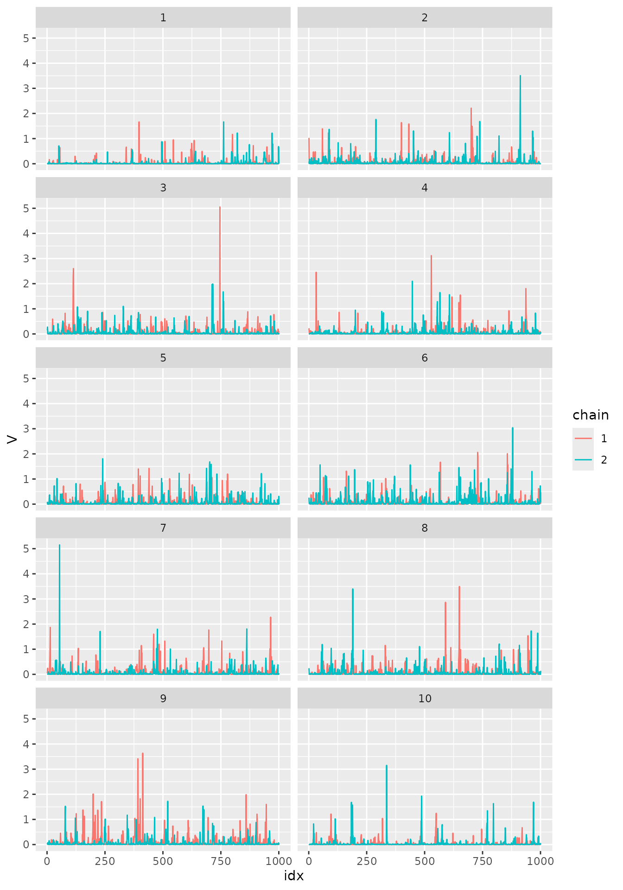
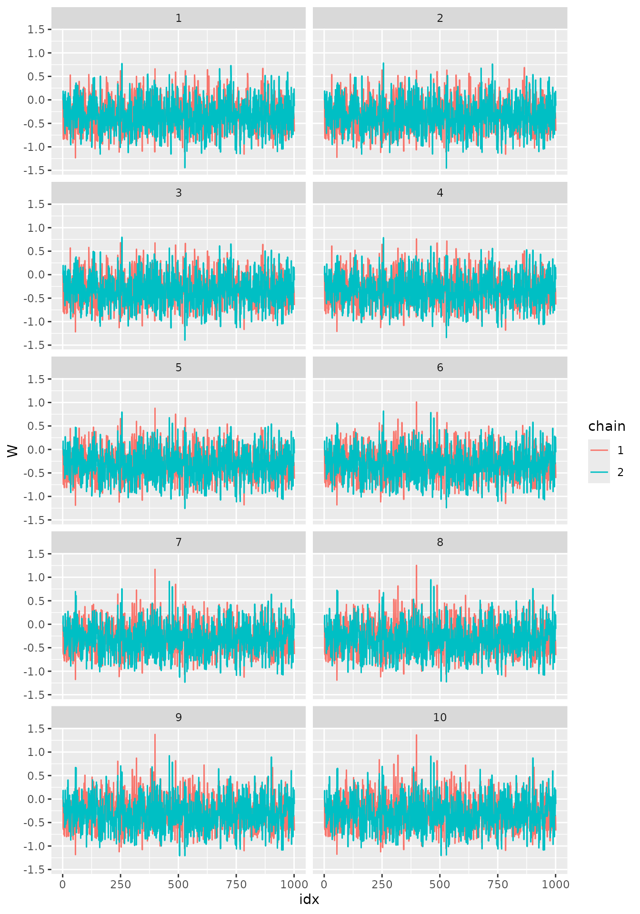
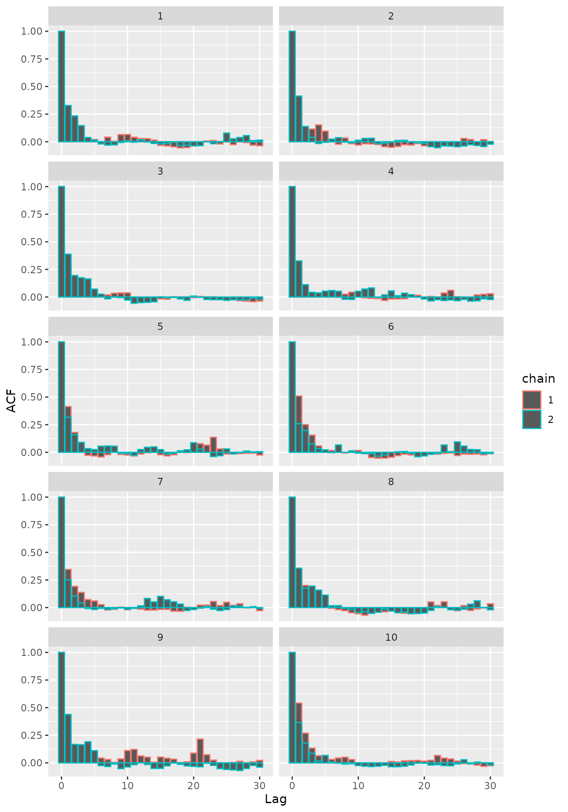
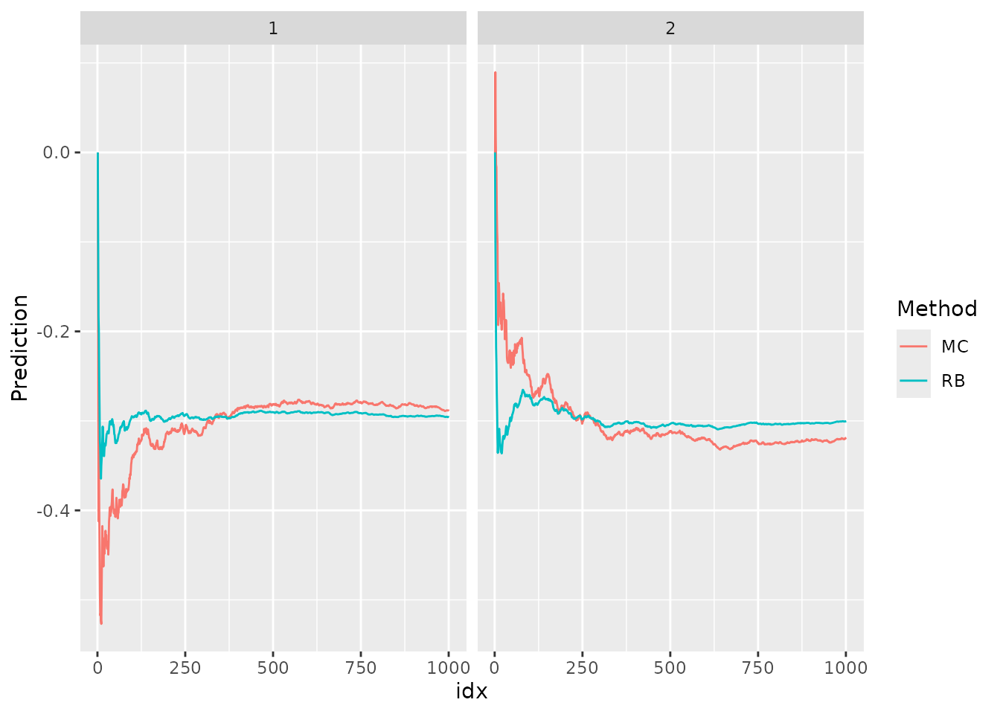

Introduction
In this vignette, we provide a breif introduction to the estimation
methods in ngme2. First, we give a description of the
model.
A popular and flexible covariance function for random fields on \(\mathbb{R}^d\) is the Matérn covariance function: \[c(\mathbf{s}, \mathbf{s}') = \frac{\sigma^2}{\Gamma(\nu)2^{\nu-1}}(\kappa \|\mathbf{s}-\mathbf{s}'\|)^\nu K_\nu(\kappa\|\mathbf{s}-\mathbf{s}'\|),\] where \(\Gamma(\cdot)\) is the Gamma function, \(K_\nu(\cdot)\) is the modified Bessel function of the second kind, \(\nu>0\) controls the correlation range and \(\sigma^2\) is the variance. Finally, \(\nu>0\) determines the smoothness of the field.
It is well-known (Whittle, 1963) that a Gaussian process \(u(\mathbf{s})\) with Matérn covariance function solves the stochastic partial differential equation (SPDE) \[\begin{equation}\label{spde} (\kappa^2 -\Delta)^\beta u = \mathcal{W}\quad \hbox{in } \mathcal{D}, \end{equation}\] where \(\Delta = \sum_{i=1}^d \frac{\partial^2}{\partial_{x_i^2}}\) is the Laplacian operator, \(\mathcal{W}\) is the Gaussian spatial white noise on \(\mathcal{D}=\mathbb{R}^d\), and \(4\beta = 2\nu + d\).
Inspired by this relation between Gaussian processes with Matérn covariance functions and solutions of the above SPDE, Lindgren et al. (2011) constructed computationally efficient Gaussian Markov random field approximations of \(u(\mathbf{s})\), where the domain \(\mathcal{D}\subsetneq \mathbb{R}^d\) is bounded and \(2\beta\in\mathbb{N}\).
In order to model departures from Gaussian behaviour we will consider the following extension due to Bolin (2014): \[(\kappa^2 - \Delta)^\beta X(\mathbf{s}) = \dot{\mathcal{M}}(\mathbf{s}),\quad \mathbf{s}\in\mathcal{D},\] where \(\dot{\mathcal{M}}\) is a non-Gaussian white-noise. More specifically, we assume \(\mathcal{M}\) to be a type-G Lévy process.
We say that a Lévy process is of type G if its increments can be represented as location-scale mixtures: \[\gamma + \mu V + \sigma \sqrt{V}Z,\] where \(\gamma, \mu\) and \(\sigma\) are parameters, \(Z\sim N(0,1)\) and is independent of \(V\), and \(V\) is a positive infinitely divisible random variable. In the SPDE we will assume \(\gamma = -\mu E(V)\) and \(\sigma = 1\).
Finally, we assume we have observations \(Y_1,\ldots,Y_N\), observed at locations \(\mathbf{s}_1,\ldots,\mathbf{s}_N\in\mathcal{D}\), where \(Y_1,\ldots, Y_N\) satisfy \[ Y_i = X(\mathbf{s}_i) + \varepsilon_i, \quad i=1,\ldots,N,\] where \(\varepsilon_1,\ldots,\varepsilon_N\) are i.i.d. following \(\varepsilon_i\sim N(0, \sigma_\varepsilon^2)\).
Finite element approximations
In this vignette we will assume basic understanding of Galerkin’s finite element method. For further details we refer the reader to the Sampling from processes given by solutions of SPDEs driven by non-Gaussian noise vignette.
Recall that we are assuming \(\beta=1\), so our SPDE is given by \[(\kappa^2 - \Delta) X(\mathbf{s}) = \dot{\mathcal{M}}(\mathbf{s}),\quad \mathbf{s}\in\mathcal{D}.\]
Let us introduce some notation regarding the finite element method (FEM). Let \(V_n = {\rm span}\{\varphi_1,\ldots,\varphi_n\}\), where \(\varphi_i(\mathbf{s}), i=1,\ldots, n\) are piecewise linear basis functions obtained from a triangulation of \(\mathcal{D}\).
An approximate solution \(X_n\) of \(X\) is written in terms of the finite element basis functions as \[X_n(\mathbf{s}) = \sum_{i=1}^n w_i \varphi_i(\mathbf{s}),\] where \(w_i\) are the FEM weights. Let, also, \[\mathbf{f} = (\dot{\mathcal{M}}(\varphi_1),\ldots, \dot{\mathcal{M}}(\varphi_n)),\] Therefore, given a vector \(\mathbf{V} = (V_1,\ldots,V_n)\) of independent stochastic variances (in our case, positive infinitely divisible random variables), we obtain that \[\mathbf{f}|\mathbf{V} \sim N(\gamma + \mu\mathbf{V}, \sigma^2{\rm diag}(\mathbf{V})).\]
Let us now introduce some useful notation. Let \(\mathbf{C}\) be the \(n\times n\) matrix with \((i,j)\)th entry given by \[\mathbf{C}_{i,j} = \int_{\mathcal{D}} \varphi_i(\mathbf{s})\varphi_j(\mathbf{s}) d\mathbf{s}.\] The matrix \(\mathbf{C}\) is known as the mass matrix in FEM theory. Let, also, \(\mathbf{G}\) be the \(n\times n\) matrix with \((i,j)\)th entry given by \[\mathbf{G}_{i,j} = \int_{\mathcal{D}} \nabla \varphi_i(\mathbf{s})\nabla\varphi_j(\mathbf{s})d\mathbf{s}.\] The matrix \(\mathbf{G}\) is known in FEM theory as stiffness matrix. Finally, let \[h_i = \int_{\mathcal{D}} \varphi_i(\mathbf{s}) d\mathbf{s}, \quad i=1,\ldots,n.\] Recall that \(\gamma = -\mu E(V)\). \(\mathbf{V}\) is chosen such that \(E[V_i] = h_i\) to ensure parameter identifiability. Then, we have that the FEM weights \(\mathbf{w} = (w_1,\ldots,w_n)\) satisfy \[\mathbf{w}|\mathbf{V} \sim N(\mathbf{K}^{-1}(-\mu \mathbf{h}+\mu\mathbf{V}), \sigma^2\mathbf{K}^{-1}{\rm diag}(\mathbf{V})\mathbf{K}^{-1}),\] where \(\mathbf{K} = \kappa^2\mathbf{C}+\mathbf{G}\) is the discretization of the differential operator and \(\mathbf{h} = (h_1,\ldots,h_n)\).
Prediction
In order to illustrate predictions we will assume that the parameters \(\kappa\), \(\sigma\) and \(\sigma_\varepsilon\) are known. The case of unknown parameters will be treated in the next section.
Our goal in this section is to perform prediction of the latent field \(X\) at locations where there are no observations. Usually, when doing such predictions, one provides mean and variance of the predictive distribution. We will now describe how one can generate these quantities when assuming the model defined in the previous sections.
Let us assume we want to obtain predictions at locations \(\widetilde{\mathbf{s}}_1, \ldots, \widetilde{\mathbf{s}}_p \in \mathcal{D}\), where \(p\in \mathbb{N}\).
Notice that for \(j=1,\ldots,p\), \[X_n(\widetilde{\mathbf{s}}_j) = \sum_{i=1}^n w_i \varphi_i(\widetilde{\mathbf{s}}_j).\] Therefore, if we let \(\mathbf{A}_p\) be the \(p\times n\) matrix whose \((i,j)\)th entry is given by \(\mathbf{A}_{p,ij} = \varphi_j(\widetilde{\mathbf{s}}_i)\), then \[(X_n(\widetilde{\mathbf{s}}_1),\ldots, X_n(\widetilde{\mathbf{s}}_p)) = \mathbf{A}_p\mathbf{w}.\] Thus, to perform prediction the desired means and variances are \[E[\mathbf{A}_p \mathbf{w} | \mathbf{Y}]\quad\hbox{and}\quad V[\mathbf{A}_p\mathbf{w}|\mathbf{Y}],\] where \(\mathbf{Y} = (Y_1,\ldots,Y_N).\)
Now, observe that the density of \(\mathbf{w}|\mathbf{Y}\) is not known. So, the mean and variance cannot be computed analytically.
There are two ways to circumvent that situation. Both of them are based on the fact that even though we do not know the density of \(\mathbf{w}|\mathbf{Y}\), we do know the density of \(\mathbf{V}|\mathbf{w},\mathbf{Y}\) and the density of \(\mathbf{w}|\mathbf{V},\mathbf{Y}\). Therefore we can use a Gibbs sampler to sample from \((\mathbf{w},\mathbf{V})|\mathbf{Y}\). From this we obtain, as a byproduct, marginal samples from \(\mathbf{w}|\mathbf{Y}\) and \(\mathbf{V}|\mathbf{Y}\).
We will now provide a brief presentation of the Gibbs sampler and then we will provide the approximations of the means and variances.
Gibbs sampler
We will now briefly describe the Gibbs sampler algorithm that will be used here.
Let \(\mathbf{A}\) be the \(N\times n\) matrix, whose \((i,j)\)th entry is given by \(\mathbf{A}_{ij} = \varphi_j(\mathbf{s}_i)\). Therefore, we have that \[(X_n(\mathbf{s}_1),\ldots,X_n(\mathbf{s}_N)) = \mathbf{A}\mathbf{w},\] so that \[\mathbf{Y} \approx \mathbf{A}\mathbf{w} + \boldsymbol{\varepsilon},\] where \(\boldsymbol{\varepsilon} = (\varepsilon_1,\ldots,\varepsilon_N)\). We will consider the above representation, i.e., we will assume that \[\mathbf{Y} = \mathbf{A}\mathbf{w} + \boldsymbol{\varepsilon},\] and that any error from the approximation of \(X(\cdot)\) by \(X_n(\cdot)\) is captured by the measurement noise.
Therefore, under this assumption we have that \[\mathbf{Y}|\mathbf{w} \sim N(\mathbf{A}\mathbf{w}, \sigma_\varepsilon^{2} \mathbf{I}).\] Also recall that \[\mathbf{w}|\mathbf{V} \sim N(\mathbf{K}^{-1}(-\mu \mathbf{h}+\mu\mathbf{V}), \sigma^2\mathbf{K}^{-1}{\rm diag}(\mathbf{V})\mathbf{K}^{-1}).\] Let \[\mathbf{m} = \mathbf{K}^{-1}(-\mu \mathbf{h}+\mu\mathbf{V})\quad \hbox{and}\quad \mathbf{Q} = \frac{1}{\sigma^2}\mathbf{K}{\rm diag}(\mathbf{V})^{-1}\mathbf{K}.\]
It thus follows (see, also, Wallin and Bolin (2015) or Asar et al. (2020)) that \[\mathbf{w} | \mathbf{V}, \mathbf{Y} \sim N\big(\widetilde{\mathbf{m}}, \widetilde{\mathbf{Q}}^{-1}),\] where \[\widetilde{\mathbf{Q}} = \mathbf{Q} + \sigma_\varepsilon^{-2} \mathbf{A}^\top\mathbf{A}\quad\hbox{and}\quad \widetilde{\mathbf{m}} = \widetilde{\mathbf{Q}}^{-1}\big(\mathbf{Q}\mathbf{m}+\sigma_\varepsilon^{-2}\mathbf{A}^\top\mathbf{Y}\big).\]
To compute the conditional distribution \(\mathbf{V}|\mathbf{w}, \mathbf{Y}\) one can see from Wallin and Bolin (2015), pp. 879, that \(V_1,\ldots,V_n\) are conditionally independent given \(\mathbf{w}\). Furthermore, we also have from Proposition 1 from Asar et al. (2020)) that if \(V\sim GIG(p,a,b)\), where \(GIG\) stands for the generalized inverse Gaussian distribution with parameters \(p, a\) and \(b\), then, for every \(j=1,\ldots,n\), \[V_j|\mathbf{w},\mathbf{Y} \sim GIG\Bigg(p-0.5, a+\frac{\mu^2}{\sigma^2}, b + \frac{(\mathbf{K}\mathbf{w}+\mathbf{h}\mu)_j^2}{\sigma^2}\Bigg).\]
We are now in a position to use the Gibbs sampling algorithm:
- Provide initial values \(\mathbf{V}^{(0)}\);
- Sample \(\mathbf{w}^{(1)} | \mathbf{V}^{(0)},\mathbf{Y}\);
- Sample \(\mathbf{V}^{(1)} | \mathbf{w}^{(1)}, \mathbf{Y}\);
- Continue by sequentially sampling \(\mathbf{w}^{(i)}|\mathbf{V}^{(i-1)},\mathbf{Y}\), and then \(\mathbf{V}^{(i)}|\mathbf{w}^{(i)}, \mathbf{Y}\) for \(i=1,\ldots,k\).
One should stop when equilibrium is reached. To obtain evidence that equilibrium has been achieved, it is best to consider more than one chain, starting from different locations, and see if they mixed well. It might also be useful to see autocorrelation plots.
Depending on the starting values, one might consider to do burn-in samples, that is, one runs a chain for some iterations, then saves the last position, throw away the rest of the samples, and use that as starting values.
It is important to observe that the samples \(\{\mathbf{w}^{(i)},\mathbf{V}^{(i)}\}_{i=1}^k\) will not be independent. However, under very general assumptions, the Gibbs sampler provides samples satisfying the law of large numbers for functionals of the sample. Therefore, one can use these samples to compute means and variances.
Standard MC estimates
Suppose we have a sample \(\mathbf{w}^{(1)},\ldots, \mathbf{w}^{(k)}\) and then approximate the mean as \[E[\mathbf{A}_p \mathbf{w} | \mathbf{Y}] \approx \frac{1}{k} \sum_{i=1}^k \mathbf{A}_p\mathbf{w}^{(i)}\] and to approximate the variance as \[V[\mathbf{A}_p \mathbf{w}|\mathbf{Y}] \approx \frac{1}{k} \sum_{i=1}^k (\mathbf{A}_p\mathbf{w}^{(i)} - E[\mathbf{A}_p\mathbf{w}|\mathbf{Y}])^2,\] where \(\{\mathbf{w}^{(i)}\}_{i=1}^k\) is a sample generated using the Gibbs sampler algorithm.
Rao-Blackwellization for means and variances
The second way consists in performing a Rao-Blackwellization (Robert and Casella, 2004) for the means and variances. By following Wallin and Bolin (2015) we have that \[ \begin{array}{ccl} E[\mathbf{A}_p\mathbf{w}|\mathbf{Y}] &=& \int_\mathbf{w} \mathbf{A}_p \mathbf{w} \pi(\mathbf{w}|\mathbf{Y})\,d\mathbf{w},\\ &=& \int_\mathbf{w} \int_{\mathbf{V}} \mathbf{A}_p \mathbf{w} \pi(\mathbf{w}|\mathbf{V},\mathbf{Y})\pi(\mathbf{V}|\mathbf{Y})\,d\mathbf{V}\,d\mathbf{w}\\ &=& \int_\mathbf{V} \mathbf{A}_p \widetilde{\mathbf{m}} \pi(\mathbf{V}|\mathbf{Y})\,d\mathbf{V}, \end{array} \] where \(\widetilde{\mathbf{m}} = E[\mathbf{w}|\mathbf{V},\mathbf{Y}]\), and its expression was given in the description of the Gibbs sampler.
Thus, we have the approximation \[E[\mathbf{A}_p\mathbf{w}|\mathbf{Y}] \approx \frac{1}{k}\sum_{i=1}^k \mathbf{A}_p \widetilde{\mathbf{m}}^{(i)},\] where \(\widetilde{\mathbf{m}}^{(i)} = \widetilde{\mathbf{m}}(\mathbf{V}^{(i)})\), that is, \(\widetilde{\mathbf{m}}^{(i)}\) was computed based on \(\mathbf{V}^{(i)}\).
Notice, also, that \(\widetilde{\mathbf{m}}\) has been computed during the Gibbs sampling, so it does not imply on additional cost.
By a similar reasoning we have that \[V(\mathbf{A}_p \mathbf{w}|\mathbf{Y}) \approx \frac{1}{k}\sum_{i=1}^k\mathbf{A}_p^\top (\widetilde{\mathbf{Q}}^{(i)})^{-1}\mathbf{A}_p,\] where \(\widetilde{\mathbf{Q}}^{(i)}\) is the conditional covariance matrix of \(\mathbf{w}\), given \(\mathbf{V}\) and \(\mathbf{Y}\), evaluated at \(\mathbf{V}^{(i)}\).
Examples in R
SPDE based model driven by NIG noise with Gaussian measurement errors in 1D
For this example we will consider the latent process \(X\) solving the equation \[(\kappa^2 - \partial^2/\partial t^2)X(t) = \dot{\mathcal{M}}(t),\] where \(\dot{\mathcal{M}}\) is a NIG-distributed white-noise. For more details on the NIG distribution as well as on how to sample from such a process we refer the reader to Sampling from processes given by solutions of SPDEs driven by non-Gaussian noise vignette. We will also be using the notation from that vignette.
Notice that we will, then, be assuming \(V_i\) to follow an inverse Gaussian distribution with parameters \(\nu\) and \(\nu h_i^2\).
We will take \(\kappa=1\), \(\sigma_\varepsilon=1\), \(\sigma=1\), \(\mu = 1\), \(\mathcal{D}=[0,1]\) and \(\nu=0.5\). We will also assume that we have 10 observations \[Y_i = X(t_i) + \varepsilon_i,\quad i=1,\ldots,10,\] where \(t_1,\ldots,t_{10}\in [0,1]\). Notice that \(\varepsilon_i \sim N(0,1)\).
Let us now build the matrix \(K\), generate \(V\) and then sample from the NIG model:
We will consider a mesh with 10 equally spaced nodes. The code to sample for such a process is given below.
library(fmesher)
library(ngme2)
library(ggplot2)
library(tidyr)
library(Matrix)
set.seed(123)
loc_1d <- 0:9/9
mesh_1d <- fm_mesh_1d(loc_1d)
# inla.mesh.fem
# inla.mesh.1d.fem(mesh_1d)$c1 + inla.mesh.1d.fem(mesh_1d)$g1
# attr(simulate(noise_nig(n=10, 1,1,0.5), seed=10), "noise")$h
# specify the model we use
mu <- 1; sigma <- 1; nu <- 0.5
spde_1d <- ngme2::f(
loc_1d,
model = "matern",
theta_K = log(1),
mesh = mesh_1d,
noise = noise_nig(mu=mu, sigma=sigma, nu=nu)
)
K <- spde_1d$operator$K
W <- simulate(spde_1d, seed = 10)[[1]]
plot(loc_1d, W, type = "l")
str(W)
#> num [1:10] 0.00269 0.02077 0.03219 0.04505 0.01776 ...
V <- attr(W, "noise")$V
plot(loc_1d, V, type = "l")We will now generate 9 uniformly distributed random locations to determine the locations of the observations. Once we determine the locations we will need to build the \(A\) matrix to obtain the values of the process \(X\) at those locations. We can build the \(A\) matrix by using the function fm_basis.
new_loc_1d <- sort(runif(9))
A_matrix <- fmesher::fm_basis(
mesh = fm_mesh_1d(loc_1d),
loc = new_loc_1d
)
A_matrix
#> 9 x 10 sparse Matrix of class "dgCMatrix"
#>
#> [1,] . . . 0.8416668 0.1583332 . . . . .
#> [2,] . . . 0.5365185 0.4634815 . . . . .
#> [3,] . . . 0.2234306 0.7765694 . . . . .
#> [4,] . . . . 0.2899858 0.7100142 . . . .
#> [5,] . . . . . 0.4407827 0.5592173 . . .
#> [6,] . . . . . 0.4294092 0.5705908 . . .
#> [7,] . . . . . . 0.8148042 0.1851958 . .
#> [8,] . . . . . . 0.7875746 0.2124254 . .
#> [9,] . . . . . . 0.2507151 0.7492849 . .
sigma_eps = 1
Y <- A_matrix %*% W + sigma_eps * rnorm(9)
plot(new_loc_1d, Y, type="h")
abline(0,0)Now, let us assume we want to obtain prediction for \(X\) at the point \(t^\ast = 5\). To this end we will obtain predictions using both methods, namely, the standard MC and the Rao-Blackwellization.
For both of these methods we need Gibbs samples, so let us build Gibbs samples. We will build 2 chains with different starting values and no burn-in samples.
# First step - Starting values for V
# Considering a sample of inv-Gaussian as starting values for both chains
h_nig_1d <- spde_1d$operator$h
V_1 <- matrix(ngme2::rig(10, nu, nu*h_nig_1d^2, seed = 1), nrow = 1)
V_2 <- matrix(ngme2::rig(10, nu, nu*h_nig_1d^2, seed = 2), nrow = 1)Recall that \(V_j \sim IG(\nu, h_j^2 \cdot \nu), j=1,\ldots,10\), \(\mu=1\) and \(\sigma=1\), so that \[V_j|\mathbf{w},\mathbf{Y} \sim GIG(-1,\nu + 1, \nu\cdot h_j^2 + (\mathbf{K}\mathbf{w}+\mathbf{h})_j^2)\] and \[\mathbf{w} | \mathbf{V}, \mathbf{Y} \sim N\big( (\mathbf{K}{\rm diag}(\mathbf{V})^{-1}\mathbf{K} + \mathbf{A}^\top\mathbf{A})^{-1}(\mathbf{K}{\rm diag}(\mathbf{V})^{-1}(\mathbf{V}-\mathbf{h})+\mathbf{A}^\top \mathbf{Y}), (\mathbf{K}{\rm diag}(\mathbf{V})^{-1}\mathbf{K} + \mathbf{A}^\top\mathbf{A})^{-1}\big).\]
Let us sample 1000 times for each chain. Let us also record the values of \(E[\mathbf{w} | \mathbf{V}, \mathbf{Y}]\) during the sampling.
W_1 <- matrix(0, nrow=1, ncol=10)
W_2 <- matrix(0, nrow=1, ncol=10)
N_sim = 1000
# Vector of conditional means E[w|V,Y]
m_W_1 <- matrix(0, nrow=1, ncol=10)
m_W_2 <- matrix(0, nrow=1, ncol=10)
# Recall that sigma_eps = 1
Asq <- t(A_matrix)%*%A_matrix / sigma_eps^2
# Recall that mu = 1 and sigma = 1
# Gibbs sampling
for(i in 1:N_sim){
Q_1 <- K%*%diag(1/V_1[i,])%*%K/sigma^2
Q_2 <- K%*%diag(1/V_2[i,])%*%K/sigma^2
resp_1 <- Q_1%*%solve(K,(-h_nig_1d + V_1[i,])*mu) + t(A_matrix)%*%Y/sigma_eps^2
resp_2 <- Q_2%*%solve(K,(-h_nig_1d + V_2[i,])*mu) + t(A_matrix)%*%Y/sigma_eps^2
m_W_1 <- rbind(m_W_1, t(solve(Q_1 + Asq, resp_1)))
m_W_2 <- rbind(m_W_2, t(solve(Q_2 + Asq, resp_2)))
Chol_1 <- chol(Q_1 + Asq)
Chol_2 <- chol(Q_2 + Asq)
W_1 <- rbind(W_1, m_W_1[i+1,] + t(solve(Chol_1, rnorm(10))))
W_2 <- rbind(W_2, m_W_2[i+1,] + t(solve(Chol_2, rnorm(10))))
V_1 <- rbind(V_1, ngme2::rgig(10,
-1,
nu + (mu/sigma)^2,
nu*h_nig_1d^2 + as.vector((K%*%W_1[i+1,] +h_nig_1d)^2)/sigma^2))
V_2 <- rbind(V_2, ngme2::rgig(10,
-1,
nu + (mu/sigma)^2,
nu*h_nig_1d^2 + as.vector((K%*%W_2[i+1,] +h_nig_1d)^2)/sigma^2))
}Let us organize the data to build traceplots.
df_V <- data.frame(V = V_1[,1], chain = "1", coord = 1, idx = 1:(N_sim+1))
temp <- data.frame(V = V_2[,1], chain = "2", coord = 1, idx = 1:(N_sim+1))
df_V <- rbind(df_V, temp)
for(i in 2:10){
temp_1 <- data.frame(V = V_1[,i], chain = "1", coord = i, idx = 1:(N_sim+1))
temp_2 <- data.frame(V = V_2[,i], chain = "2", coord = i, idx = 1:(N_sim+1))
df_V <- rbind(df_V, temp_1, temp_2)
}
df_W <- data.frame(W = W_1[,1], chain = "1", coord = 1, idx = 1:(N_sim+1))
temp <- data.frame(W = W_2[,1], chain = "2", coord = 1, idx = 1:(N_sim+1))
df_W <- rbind(df_W, temp)
for(i in 2:10){
temp_1 <- data.frame(W = W_1[,i], chain = "1", coord = i, idx = 1:(N_sim+1))
temp_2 <- data.frame(W = W_2[,i], chain = "2", coord = i, idx = 1:(N_sim+1))
df_W <- rbind(df_W, temp_1, temp_2)
}Let us compare the posterior means:
V
#> NULL
colMeans(V_1)
#> [1] 0.02867265 0.06101310 0.06768444 0.05076801 0.05678794 0.07455169
#> [7] 0.06281583 0.06359449 0.08668888 0.04962432
colMeans(V_2)
#> [1] 0.03664791 0.05548684 0.06701723 0.05467433 0.07813323 0.06536818
#> [7] 0.06512153 0.08114957 0.07960875 0.03353547
as.vector(W)
#> [1] 0.002694590 0.020771634 0.032185870 0.045046367 0.017760541
#> [6] 0.002791359 -0.015611763 -0.021791327 -0.039828396 -0.044018875
colMeans(W_1)
#> [1] -0.3417648 -0.3409139 -0.3381107 -0.3343951 -0.3280072 -0.3194661
#> [7] -0.3131416 -0.3073292 -0.3019353 -0.3005066
colMeans(W_2)
#> [1] -0.3594827 -0.3590511 -0.3555535 -0.3515848 -0.3453499 -0.3394409
#> [7] -0.3340322 -0.3290037 -0.3274828 -0.3270751Let us begin by building traceplots for \(V\):
ggplot(df_V, aes(x = idx, y = V, col = chain)) +
geom_line() + facet_wrap(~ coord, ncol=2) and for \(W\):
ggplot(df_W, aes(x = idx, y = W, col = chain)) +
geom_line() + facet_wrap(~ coord, ncol=2)
The traceplots appear to be healthy, not being stuck anywhere and the chain apparently mixed well.
We can also build autocorrelation plots. To such an end let us prepare the data frames.
acf_V <- as.vector(acf(V_1[,1], plot=FALSE)$acf)
df_V_acf <- data.frame(acf = acf_V,
chain = "1", coord = 1, lag = 0:(length(acf_V)-1))
acf_V <- as.vector(acf(V_2[,1], plot=FALSE)$acf)
temp <- data.frame(acf = as.vector(acf(V_2[,1], plot=FALSE)$acf),
chain = "2", coord = 1, lag = 0:(length(acf_V)-1))
df_V_acf <- rbind(df_V_acf, temp)
for(i in 2:10){
acf_V <- as.vector(acf(V_1[,i], plot=FALSE)$acf)
temp_1 <- data.frame(acf = acf_V,
chain = "1", coord = i, lag = 0:(length(acf_V)-1))
acf_V <- as.vector(acf(V_2[,i], plot=FALSE)$acf)
temp_2 <- data.frame(acf = acf_V,
chain = "2", coord = i, lag = 0:(length(acf_V)-1))
df_V_acf <- rbind(df_V_acf, temp_1, temp_2)
}
acf_W <- as.vector(acf(W_1[,1], plot=FALSE)$acf)
df_W_acf <- data.frame(acf = acf_W,
chain = "1", coord = 1, lag = 0:(length(acf_W)-1))
acf_W <- as.vector(acf(W_2[,1], plot=FALSE)$acf)
temp <- data.frame(acf = acf_W, chain = "2",
coord = 1, lag = 0:(length(acf_W)-1))
df_W_acf <- rbind(df_W_acf, temp)
for(i in 2:10){
acf_W <- as.vector(acf(W_1[,i], plot=FALSE)$acf)
temp_1 <- data.frame(acf = acf_W,
chain = "1", coord = i, lag = 0:(length(acf_W)-1))
acf_W <- as.vector(acf(W_2[,i], plot=FALSE)$acf)
temp_2 <- data.frame(acf = acf_W,
chain = "2",
coord = i, lag = 0:(length(acf_W)-1))
df_W_acf <- rbind(df_W_acf, temp_1, temp_2)
}Now, let us plot the autocorrelation plots for \(V\):
ggplot(df_V_acf, aes(x=lag,y=acf, col=chain)) +
geom_bar(stat = "identity", position = "identity") +
xlab('Lag') + ylab('ACF') + facet_wrap(~coord, ncol=2)
Now, the autocorrelation plots for \(W\):
ggplot(df_W_acf, aes(x=lag,y=acf, col=chain)) +
geom_bar(stat = "identity", position = "identity") +
xlab('Lag') + ylab('ACF') + facet_wrap(~coord, ncol=2)
We can see that the correlation is very low.
We will now move forward to obtain the predictions at \(t^\ast = 5/9\). We will compute MC and Rao-Blackwellization for the predictions.
# Computing A matrix at t^\ast
A_pred <- fm_basis(mesh = mesh_1d, loc = 5/9)
# MC_estimate:
AW_1 <- A_pred%*%t(W_1)
MC_pred_1 <- cumsum(AW_1)/(1:length(AW_1))
RB_1 <- A_pred%*%t(m_W_1)
RB_pred_1 <- cumsum(RB_1)/(1:length(AW_1))
df_pred <- data.frame(idx = 1:length(AW_1), MC = MC_pred_1,
RB = RB_pred_1, chain = "1")
AW_2 <- A_pred%*%t(W_2)
MC_pred_2 <- cumsum(AW_2)/(1:length(AW_2))
RB_2 <- A_pred%*%t(m_W_2)
RB_pred_2 <- cumsum(RB_2)/(1:length(AW_2))
temp <- data.frame(idx = 1:length(AW_2), MC = MC_pred_2,
RB = RB_pred_2, chain = "2")
df_pred <- rbind(df_pred, temp)
df_pred <- tidyr::pivot_longer(df_pred,
cols = c("MC", "RB"),
names_to = "Method",
values_to = "Prediction")
ggplot(df_pred, aes(x = idx, y = Prediction, col=Method)) +
facet_wrap(~chain) + geom_line()
We notice that the Rao-Blackwellization approach converges much faster than the standard MC approach.
Model estimation
In ngme2, we employ the maximum likelihood estimation
and stochastic gradient descent method to estimate the parameters.
Stochastic gradient descent and maximum likelihood
For maximum likelihood estimation the goal is to minimize \(f({\boldsymbol{\theta}}) = -L({\boldsymbol{\theta}}; \mathbf{Y})\), where \(L\) is the log-likelihood function of \(\mathbf{Y}\).
For non-Gaussian models there is an additional complication that the log-likelihood function \(L\) is not known in explicit form. A way to solve this problem is to use Fisher’s identity (Fisher, 1925). See also Douc et al. (2014) for further details.
Let \(\mathbf{U} = (U_1,\ldots, U_n)\) be a sequence of observed random variables with latent variables \(\mathbf{Z} = (Z_1,\ldots,Z_n)\), \(Z_i\) being a random variable in \(\mathbb{R}^p\). Assume that the joint distribution of \(\mathbf{U}\) and \(\mathbf{Z}\) is parameterized by some \({\boldsymbol{\theta}}\), where \(\mathbf{{\boldsymbol{\theta}}} \in \Theta\) and \(\Theta\subset\mathbb{R}^p\). Assume that the complete log-likelihood \(L({\boldsymbol{\theta}}; \mathbf{U},\mathbf{Z})\) (with respect to some reference \(\sigma\)-finite measure) is differentiable with respect to \({\boldsymbol{\theta}}\) and are regular, in the sense that one may differentiate through the integral sign. Then, the marginal log-likelihood with respect to \(\mathbf{U}\) satisfies \[\nabla_{\boldsymbol{\theta}} L({\boldsymbol{\theta}}; \mathbf{U}) = E_{\mathbf{Z}}[\nabla_{\boldsymbol{\theta}} L({\boldsymbol{\theta}}; \mathbf{U}, \mathbf{Z})|\mathbf{U}].\]
Standard MC approximation of the gradient
In our context, we assume \(\mathbf{w}\) and \(\mathbf{V}\) to be hidden. Therefore, we may use Fisher’s identity above to the latent variable \((\mathbf{V},\mathbf{w})\) to obtain that \[\nabla_{\boldsymbol{\theta}} L({\boldsymbol{\theta}}; \mathbf{Y}) = E_{\mathbf{V},\mathbf{w}}[\nabla_{\boldsymbol{\theta}} L({\boldsymbol{\theta}}; \mathbf{Y}, \mathbf{V}, \mathbf{w})|\mathbf{Y}].\] Thus, the idea here is to use both samples of \(\mathbf{V}\) and \(\mathbf{w}\) obtained from the Gibbs sampler to approximate the gradient as
\[\nabla_{{\boldsymbol{\theta}}}L({\boldsymbol{\theta}};\mathbf{Y}) \approx \frac{1}{k} \sum_{j=1}^k \nabla_{{\boldsymbol{\theta}}} L({\boldsymbol{\theta}};\mathbf{Y},\mathbf{V}^{(j)}, \mathbf{w}^{(j)}).\] To this end, we will compute the gradients \(\nabla_{{\boldsymbol{\theta}}} L({\boldsymbol{\theta}};\mathbf{Y},\mathbf{V}, \mathbf{w})\).
We have that \[\mathbf{Y}|\mathbf{w} \sim N(\mathbf{A}\mathbf{w}, \sigma_\varepsilon^{-2} \mathbf{I}),\] \[\mathbf{w}|\mathbf{V} \sim N(\mathbf{K}^{-1}(-\mu \mathbf{h}+\mu\mathbf{V}), \mathbf{K}^{-1}{\rm diag}(\mathbf{V})\mathbf{K}^{-1})\] and \(\mathbf{V}\) follows a GIG distribution such that for every \(i\), \(E[V_i]=h_i\).
Therefore, we have that \[\begin{array}{ccl} L((\mu,\sigma_\varepsilon); \mathbf{w}, \mathbf{V},\mathbf{Y}) &=& -n\log(\sigma_\varepsilon)-0.5\sigma_\varepsilon^{-2} (\mathbf{Y} - \mathbf{A}\mathbf{K}^{-1}(-\mu \mathbf{h}+\mu\mathbf{V}))\\ &-&0.5\sigma_\varepsilon^{-2}(\mathbf{A}(\mathbf{w}-\mathbf{m})^\top{\rm diag} (1/V_i) (\mathbf{Y} - \mathbf{A}\mathbf{K}^{-1}(-\mu \mathbf{h}+\mu\mathbf{V})-\mathbf{A}(\mathbf{w}-\mathbf{m})) + const, \end{array}\] where \(const\) does not depend on \((\mu,\sigma)\). Thus, we have that \[\nabla_\mu L((\mu,\sigma_\varepsilon); \mathbf{w}, \mathbf{V},\mathbf{Y}) = \sigma_\varepsilon^{-2}\mathbf{A}\mathbf{K}^{-1}(-\mathbf{h}+\mathbf{V}) {\rm diag} (1/V_i)(\mathbf{Y} - \mathbf{A}\mathbf{K}^{-1}(-\mu \mathbf{h}+\mu\mathbf{V}) - \mathbf{A}(\mathbf{w}-\mathbf{m})).\] Now, with respect to \(\sigma_\varepsilon\) we have that \[\nabla_{\sigma_\varepsilon} L((\mu,\sigma_\varepsilon); \mathbf{w}, \mathbf{V},\mathbf{Y}) = -\frac{n}{\sigma_\varepsilon} + \frac{1}{\sigma_\varepsilon^3} (\mathbf{Y} - \mathbf{A}\mathbf{K}^{-1}(-\mu \mathbf{h}+\mu\mathbf{V})-\mathbf{A}(\mathbf{w}-\mathbf{m}))^\top{\rm diag} (1/V_i) (\mathbf{Y} - \mathbf{A}\mathbf{K}^{-1}(-\mu \mathbf{h}+\mu\mathbf{V})-\mathbf{A}(\mathbf{w}-\mathbf{m}))\] By proceeding analogously, we obtain that the gradient with respect to \(\kappa^2\) is given by \[\nabla_{\kappa^2} L(\kappa^2; \mathbf{Y}, \mathbf{w}, \mathbf{V}) = tr(\mathbf{C}\mathbf{K}^{-1})- \mathbf{w}^\top \mathbf{C}^\top{\rm diag} (1/V_i)(\mathbf{K}\mathbf{w}+(\mathbf{h}-\mathbf{V})\mu).\] Finally, for the gradient of the parameter of the distribution of \(\mathbf{V}\), we use the Rao-Blackwellized version, see the next subsection.
Rao-Blackwellized approximation of the gradient
Now, observe that we can compute the log-likelihood \(L({\boldsymbol{\theta}}; \mathbf{Y}, \mathbf{V})\). Indeed, we apply Fisher’s identity again to find that \[\nabla_{\boldsymbol{\theta}} L({\boldsymbol{\theta}}; \mathbf{Y}, \mathbf{V}) = E_\mathbf{w}[\nabla_{\boldsymbol{\theta}} L({\boldsymbol{\theta}}; \mathbf{Y}, \mathbf{V}, \mathbf{w})|\mathbf{Y},\mathbf{V}].\] So, with the above gradients, we can approximate the gradient \(\nabla_{\boldsymbol{\theta}} L({\boldsymbol{\theta}}; \mathbf{Y})\) by taking the mean over the samples of \(\mathbf{V}\) obtained by the Gibbs sampling: \[\nabla_{{\boldsymbol{\theta}}}L({\boldsymbol{\theta}};\mathbf{Y}) \approx \frac{1}{k} \sum_{j=1}^k \nabla_{{\boldsymbol{\theta}}} L({\boldsymbol{\theta}};\mathbf{Y},\mathbf{V}^{(j)}).\]
Let us now compute the gradients \(\nabla_{{\boldsymbol{\theta}}} L({\boldsymbol{\theta}};\mathbf{Y},\mathbf{V})\). We begin by computing \(\nabla_\mu L((\mu,\sigma_\varepsilon); \mathbf{V},\mathbf{Y})\). To this end, we use the expression for \(\nabla_\mu L((\mu,\sigma_\varepsilon); \mathbf{w}, \mathbf{V},\mathbf{Y})\) given in the previous subsection together with \(E[\mathbf{w}|\mathbf{V},\mathbf{Y}] = \widetilde{\mathbf{m}}\), to conclude that \[\nabla_\mu L((\mu,\sigma_\varepsilon); \mathbf{V},\mathbf{Y}) = \sigma_\varepsilon^{-2}\mathbf{A}\mathbf{K}^{-1}(-\mathbf{h}+\mathbf{V}) {\rm diag} (1/V_i)(\mathbf{Y} - \mathbf{A}\mathbf{K}^{-1}(-\mu \mathbf{h}+\mu\mathbf{V}) - \mathbf{A}(\widetilde{\mathbf{m}}-\mathbf{m}))\] Analogously, we also obtain that \[\nabla_{\sigma_\varepsilon} L((\mu,\sigma_\varepsilon); \mathbf{V},\mathbf{Y}) = -\frac{n}{\sigma_\varepsilon} + \frac{1}{\sigma_\varepsilon^3} (\mathbf{Y} - \mathbf{A}\mathbf{K}^{-1}(-\mu \mathbf{h}+\mu\mathbf{V})-\mathbf{A}(\widetilde{\mathbf{m}}-\mathbf{m}))^\top{\rm diag} (1/V_i) (\mathbf{Y} - \mathbf{A}\mathbf{K}^{-1}(-\mu \mathbf{h}+\mu\mathbf{V})-\mathbf{A}(\widetilde{\mathbf{m}}-\mathbf{m})).\]
Now, notice that \[\nabla_{\kappa^2} L(\kappa^2; \mathbf{Y}, \mathbf{w}, \mathbf{V}) = tr(\mathbf{C}\mathbf{K}^{-1})- \mathbf{w}^\top \mathbf{C}^\top{\rm diag} (1/V_i)\mathbf{K}\mathbf{w}-\mathbf{w}^\top \mathbf{C}^\top{\rm diag} (1/V_i)(\mathbf{h}-\mathbf{V})\mu,\] that \[E[\mathbf{w}|\mathbf{V},\mathbf{Y}] = \widetilde{\mathbf{m}}\] and that \[E[\mathbf{w}^\top \mathbf{C}^\top{\rm diag} (1/V_i)\mathbf{K}\mathbf{w}|\mathbf{V},\mathbf{Y}] = tr(\mathbf{C}^\top{\rm diag} (1/V_i)\mathbf{K}\widetilde{\mathbf{Q}}^{-1}) + \widetilde{\mathbf{m}}^\top\mathbf{C}^\top{\rm diag} (1/V_i)\mathbf{K}\widetilde{\mathbf{m}}\] to conclude that \[\nabla_{\kappa^2} L(\kappa^2; \mathbf{Y}, \mathbf{V}) = tr(\mathbf{C}\mathbf{K}^{-1})- tr(\mathbf{C}^\top{\rm diag} (1/V_i)\mathbf{K}\widetilde{\mathbf{Q}}^{-1}) - \widetilde{\mathbf{m}}^\top\mathbf{C}^\top{\rm diag} (1/V_i)\mathbf{K}\widetilde{\mathbf{m}}-\widetilde{\mathbf{m}}^\top \mathbf{C}^\top{\rm diag} (1/V_i)(\mathbf{h}-\mathbf{V})\mu.\]
Finally, the gradient for the parameter of the distribution of \(\mathbf{V}\) depends on the distribution of \(\mathbf{V}\). To illustrate we will present the gradient with respect to the parameter \(\nu\) when \(\mathbf{V}\) follows inverse-Gaussian distribution, which is the situation in which we have NIG noise.
For this case we have that \[\nabla_\nu L(\nu; \mathbf{Y},\mathbf{V}) = -\sum_{j=1}^n \frac{1}{2}\Bigg(\nu^{-1} -\frac{h_{j}^2}{V_j} +V_j -h_j\Bigg).\]
A remark on traces
On the gradients \(\nabla_{\kappa^2} L(\kappa^2; \mathbf{Y}, \mathbf{V})\) and \(\nabla_{\kappa^2} L(\kappa^2; \mathbf{Y}, \mathbf{w}, \mathbf{V})\), we can see the traces \(tr(\mathbf{C}\mathbf{K}^{-1})\) and \(tr(\mathbf{C}^\top{\rm diag} (1/V_i)\mathbf{K}\widetilde{\mathbf{Q}}^{-1})\). These traces contain the inverses \(\mathbf{K}^{-1}\) and \(\widetilde{\mathbf{Q}}^{-1}\).
There are efficient alternatives to handling these traces. For instance, if we want to compute \(tr(AB^{-1})\), \(B\) is symmetric, and the sparsity of \(B\) is the same as the sparsity of \(A\), we only need to compute the elements of \(B^{-1}\) for the coordinates with non-zero entries. This is what happens, for instance, in \(tr(\mathbf{C}\mathbf{K}^{-1})\). So, to compute this trace there is this efficient alternative. It is implemented in the ngme package.
References
Lindgren, F., Rue, H., and Lindstrom, J. (2011). An explicit link between Gaussian fields and Gaussian Markov random fields: the stochastic partial differential equation approach. Journal of the Royal Statistical Society: Series B (Statistical Methodology), 73(4):423–498.
Robert, C., G. Casella (2004). Monte Carlo statistical methods, Springer Texts in Statistics, Springer, New York, USA.
Wallin, J., Bollin, D. (2015). Geostatistical Modelling Using Non-Gaussian Matérn Fields. Scandinavian Journal of Statistics. 42(3):872-890.
Whittle, P. (1963). Stochastic-processes in several dimensions. Bulletin of the International Statistical Institute, 40(2):974–994.